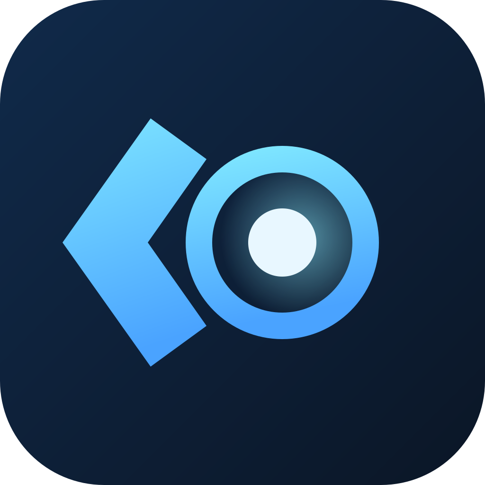

分析引擎正在启动
工作区
项目来源
正在读取项目…
尚未连接 Ubuntu 项目。
知识库
添加项目后会按子仓分类知识库。
每个工作目录或子仓对应一个可切换的知识空间。
分析任务
正在读取任务…
终端
连接 Ubuntu 项目后，终端会固定在窗口底部，可拖动上边缘调整高度。

本地代码智能 · 版本检查中
正在读取项目…
尚未连接 Ubuntu 项目。
添加项目后会按子仓分类知识库。
每个工作目录或子仓对应一个可切换的知识空间。
正在读取任务…
连接 Ubuntu 项目后，终端会固定在窗口底部，可拖动上边缘调整高度。